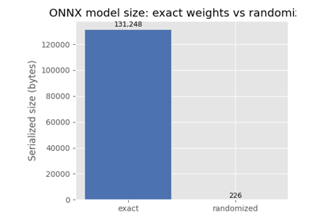

Note
Go to the end to download the full example code.
Converting a scikit-learn Pipeline to ONNX¶
yobx.sklearn.to_onnx() converts fitted
scikit-learn estimators and pipelines into
onnx.ModelProto objects that can be executed with any
ONNX-compatible runtime.
The converter covers the following estimators (see
yobx.sklearn for the full registry):
sklearn.linear_model.LogisticRegression/LogisticRegressionCVsklearn.pipeline.Pipeline— chains the above step-by-step
The workflow is:
Train a scikit-learn estimator (or pipeline) as usual.
Call
yobx.sklearn.to_onnx()with a representative dummy input to convert the fitted model into an ONNX graph.Run the ONNX model with any ONNX runtime — this example uses
ExtendedReferenceEvaluator.Verify that the ONNX outputs match scikit-learn’s predictions.
import numpy as np
from sklearn.linear_model import LogisticRegression
from sklearn.pipeline import Pipeline
from sklearn.preprocessing import StandardScaler
from yobx.reference import ExtendedReferenceEvaluator
from yobx.sklearn import to_onnx
1. Train a scikit-learn pipeline¶
We train a simple two-step pipeline:
StandardScaler followed by LogisticRegression.
The dataset has eighty samples and four features with two classes.
rng = np.random.default_rng(0)
X_train = rng.standard_normal((80, 4)).astype(np.float32)
y_train = (X_train[:, 0] + X_train[:, 1] > 0).astype(int)
pipe = Pipeline(
[
("scaler", StandardScaler()),
("clf", LogisticRegression()),
]
)
pipe.fit(X_train, y_train)
print("Pipeline steps:")
for name, step in pipe.steps:
print(f" {name}: {step}")
Pipeline steps:
scaler: StandardScaler()
clf: LogisticRegression()
2. Convert to ONNX¶
yobx.sklearn.to_onnx() requires a representative dummy input
(a NumPy array) so it can infer the input dtype and shape.
The first axis is automatically treated as the batch dimension.
onx = to_onnx(pipe, (X_train[:1],))
print(f"\nONNX model opset : {onx.opset_import[0].version}")
print(f"Number of nodes : {len(onx.graph.node)}")
print("Node op-types :", [n.op_type for n in onx.graph.node])
print(
"Graph inputs :",
[(inp.name, inp.type.tensor_type.elem_type) for inp in onx.graph.input],
)
print(
"Graph outputs :",
[out.name for out in onx.graph.output],
)
ONNX model opset : 20
Number of nodes : 8
Node op-types : ['Sub', 'Div', 'Gemm', 'Sigmoid', 'Sub', 'Concat', 'ArgMax', 'Gather']
Graph inputs : [('X', 1)]
Graph outputs : ['label', 'probabilities']
3. Run the ONNX model and compare outputs¶
We run the converted model on a held-out test set and verify that the ONNX predictions match those produced by scikit-learn.
X_test = rng.standard_normal((20, 4)).astype(np.float32)
y_test = (X_test[:, 0] + X_test[:, 1] > 0).astype(int)
ref = ExtendedReferenceEvaluator(onx)
label_onnx, proba_onnx = ref.run(None, {"X": X_test})
label_sk = pipe.predict(X_test)
proba_sk = pipe.predict_proba(X_test).astype(np.float32)
print("\nFirst 5 labels (sklearn):", label_sk[:5])
print("First 5 labels (ONNX) :", label_onnx[:5])
print("First 5 probas (sklearn):", proba_sk[:5])
print("First 5 probas (ONNX) :", proba_onnx[:5])
assert np.array_equal(label_sk, label_onnx), "Label mismatch!"
assert np.allclose(proba_sk, proba_onnx, atol=1e-5), "Probability mismatch!"
print("\nAll predictions match ✓")
First 5 labels (sklearn): [0 1 1 1 0]
First 5 labels (ONNX) : [0 1 1 1 0]
First 5 probas (sklearn): [[0.6968902 0.30310982]
[0.06376062 0.93623936]
[0.38313922 0.6168608 ]
[0.16703625 0.83296376]
[0.63305384 0.36694616]]
First 5 probas (ONNX) : [[0.69689023 0.3031098 ]
[0.06376058 0.9362394 ]
[0.38313925 0.61686075]
[0.16703624 0.83296376]
[0.63305384 0.36694616]]
All predictions match ✓
4. Multiclass pipeline¶
The same API works transparently for multiclass problems.
The LogisticRegression converter automatically switches from
a sigmoid-based binary graph to a softmax-based multiclass graph.
X_mc = rng.standard_normal((120, 4)).astype(np.float32)
y_mc = rng.integers(0, 3, size=120)
pipe_mc = Pipeline(
[
("scaler", StandardScaler()),
("clf", LogisticRegression(max_iter=500)),
]
)
pipe_mc.fit(X_mc, y_mc)
X_test_mc = rng.standard_normal((30, 4)).astype(np.float32)
onx_mc = to_onnx(pipe_mc, (X_test_mc[:1],))
ref_mc = ExtendedReferenceEvaluator(onx_mc)
label_mc_onnx, proba_mc_onnx = ref_mc.run(None, {"X": X_test_mc})
label_mc_sk = pipe_mc.predict(X_test_mc)
proba_mc_sk = pipe_mc.predict_proba(X_test_mc).astype(np.float32)
assert np.array_equal(label_mc_sk, label_mc_onnx), "Multiclass label mismatch!"
assert np.allclose(proba_mc_sk, proba_mc_onnx, atol=1e-5), "Multiclass proba mismatch!"
print("Multiclass predictions match ✓")
Multiclass predictions match ✓
5. Visualize the ONNX graph¶
to_dot converts the
onnx.ModelProto into a DOT string that can be rendered by
Graphviz. The graph shows every ONNX node produced by the converter,
with dtype/shape annotations on each edge.
digraph {
graph [rankdir=TB, splines=true, overlap=false, nodesep=0.2, ranksep=0.2, fontsize=8];
node [style="rounded,filled", color="#888888", fontcolor="#222222", shape=box];
edge [arrowhead=vee, fontsize=7, labeldistance=-5, labelangle=0];
I_0 [label="X\nFLOAT(batch,4)", fillcolor="#aaeeaa"];
i_1 [label="init1_s1x4_\nFLOAT(1, 4)", fillcolor="#cccc00"];
Sub_2 [label="Sub\n(., [-0.0405999, 0.006937298, -0.23972343, 0.111778386])", fillcolor="#cccccc"];
Div_3 [label="Div\n(., [0.95415455, 0.85836834, 1.0299865, 1.1831794])", fillcolor="#cccccc"];
Gemm_4 [label="Gemm(., ., [0.21210824])", fillcolor="#cccccc"];
Sigmoid_5 [label="Sigmoid(.)", fillcolor="#cccccc"];
Sub_6 [label="Sub([1.0], .)", fillcolor="#cccccc"];
Concat_7 [label="Concat(., ., axis=-1)", fillcolor="#cccccc"];
ArgMax_8 [label="ArgMax(., axis=1)", fillcolor="#cccccc"];
Gather_9 [label="Gather([0, 1], ., axis=0)", fillcolor="#cccccc"];
I_0 -> Sub_2 [label="FLOAT(batch,4)"];
Sub_2 -> Div_3;
Div_3 -> Gemm_4;
i_1 -> Gemm_4 [label="FLOAT(1, 4)"];
Gemm_4 -> Sigmoid_5;
Sigmoid_5 -> Sub_6;
Sub_6 -> Concat_7;
Sigmoid_5 -> Concat_7;
Concat_7 -> ArgMax_8;
ArgMax_8 -> Gather_9;
O_10 [label="label\n", fillcolor="#aaaaee"];
Gather_9 -> O_10;
O_11 [label="probabilities\n", fillcolor="#aaaaee"];
Concat_7 -> O_11;
}
Display the graph¶
The DOT source produced above describes the following graph.
Total running time of the script: (0 minutes 0.403 seconds)
Related examples

MiniOnnxBuilder: serialize tensors to an ONNX model